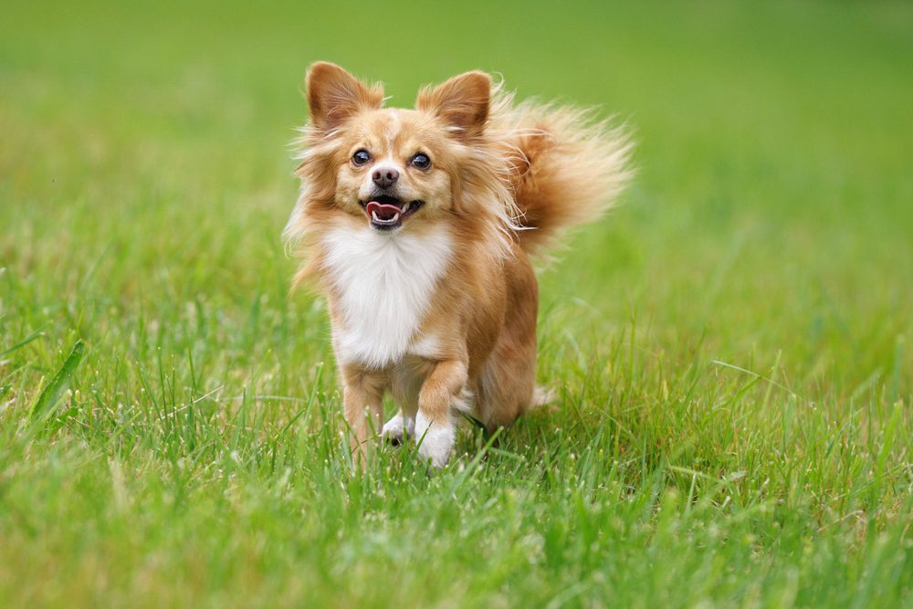

Elegant und voller Charme
Der Langhaar Chihuahua zeichnet sich durch sein weiches, seidiges Fell aus, das an Ohren, Halskrause, Brust und Rute besonders auffällig ist. Trotz der eleganten Optik ist das Fell pflegeleicht, wenn es regelmäßig gebürstet wird. Diese Variante wirkt oft etwas sanfter im Erscheinungsbild, bleibt aber genauso lebhaft, mutig und anhänglich wie alle Chihuahuas.

Langhaar Chihuahua – elegant und verspielt